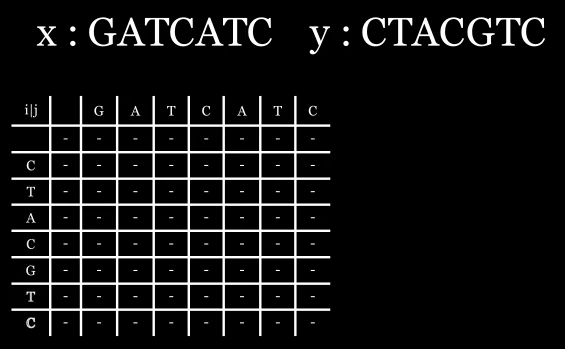
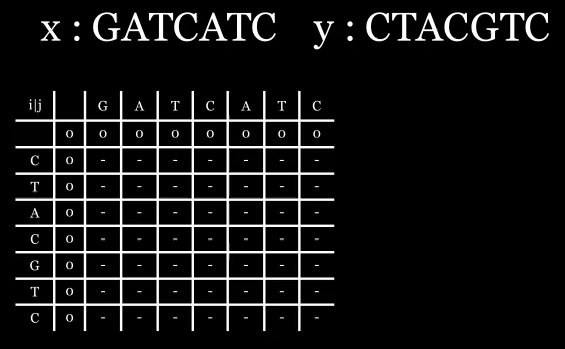

What is the Longest Common Subsequence problem? Wikipedia defines "The Longest common subsequence problem is the problem of finding the longest subsequence common to all subsequence in a set of sequences (often justtwo sequences)." Focusing on the two sequence problem, consider the following example. Given two strings, x = GATCATC and y = CTACGTC, the longest common subsequence would be ACTC. This example isn't too hard to solve by inspection but with longer strings solving through inspection is not feasible.
One potential way to solve these subset of problems is to use dynamic programming. I'm planning on writing specifically about dynamic programming, for now check out Wikipedia's entry about it Here.
Start with an empty array as shown below, this will hold intermediate values while calculating the solution.

A(i,j) contains the longest subsequence including the first i characters of string x and the first j characters of string y.
Initialize the array as such. We are trying to maximize the number in our array so we initialize the array with 0's.

$$ A(i,j) = \Bigg\{ {\substack{ 1 + A(i-1,j-1) \quad \quad if: \ x_i=y_j \\ \\ max( A(i-1,j), A(i,j-1)) \quad else }} $$